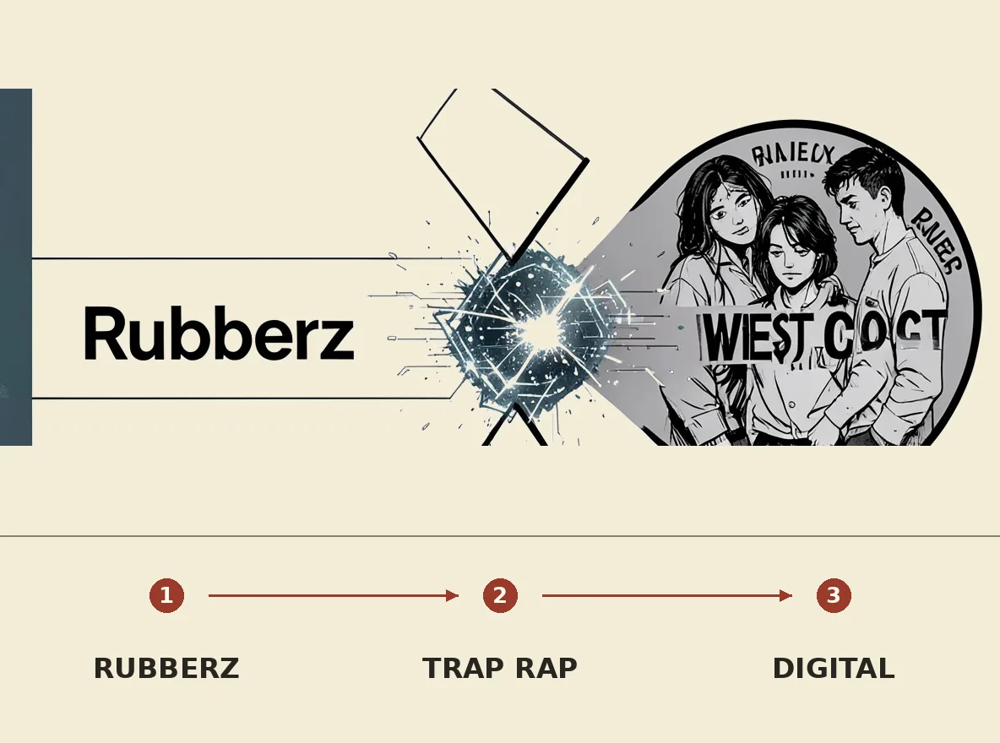

Is this Billboard Hot 100 hit AI slop?
Recommended

Fenix Flexin's Billboard Hot 100 hit 'Rubberz' has raised suspicions about its AI-generated origins. The song's dramatic left turn from trap-influenced West Coast rap to 80s UK synth pop, along with its low-quality recording artifacts, has led many to speculate that AI was involved. While AI music detectors are not entirely reliable, supporting materials such as the single's cover art and lyrics have been flagged as AI-generated with high certainty.